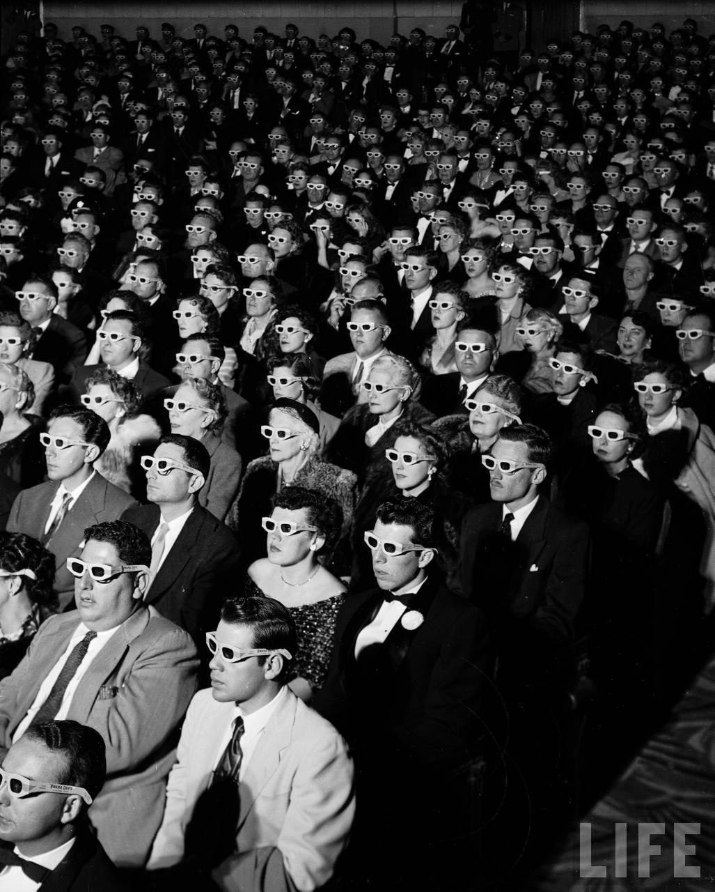

From the book "the Society of Spectale", Guy Debord created a term "spectacles" to represent the images and visual content made in mass media.
However, in Debord's persepctive, the visual contents could be harmful to people's way of thinking unconsciously.
The spectacles are beautiful and fine visual stimulus that makes you inevitably lose yourself
The audience would inside the spectacles forgot the real important social issues while the reality becomes worse.
We are currently experiencing a new type of media that contains spectacles and it influence our mind inside unconsciously.
This video foreshadows how people's mind got changed inside Internet.
However, there is a possible solution in the unstoppable Internet.
What we can do is to explore, and experience different things either in reality and Internet, and reflect on what we truly are instead of following what media presents to us.
Otherwise, the only way for us to escape from the mess will be the huge mental trauma that eventually fall everyone into the abyss.
---Caroline Guo